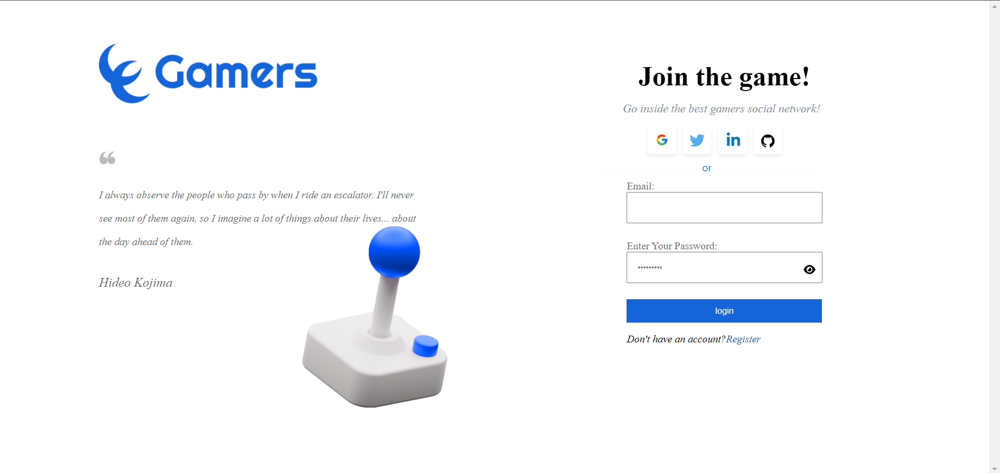
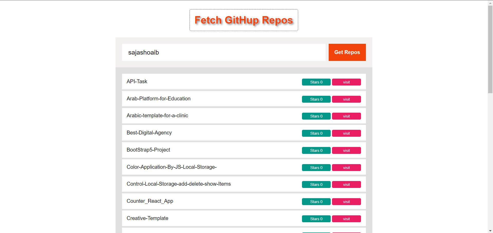
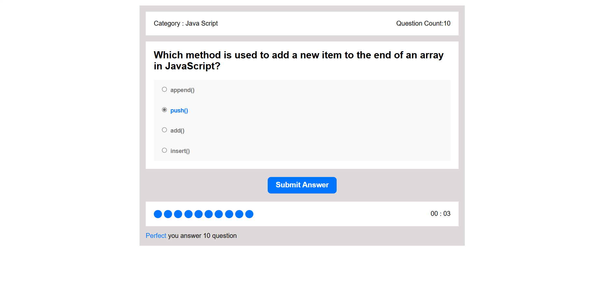
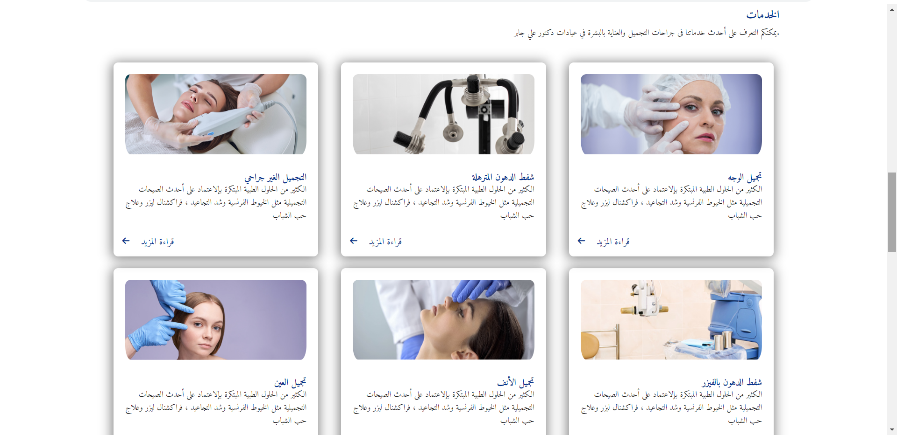
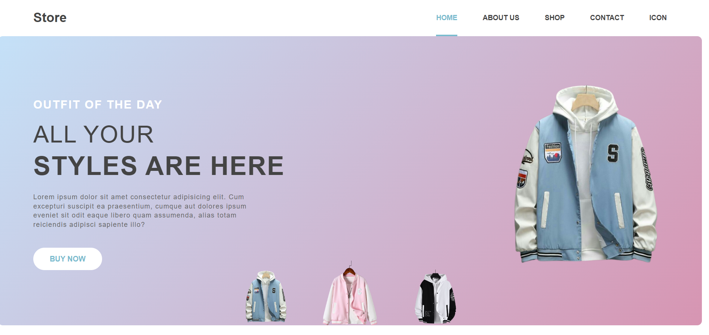
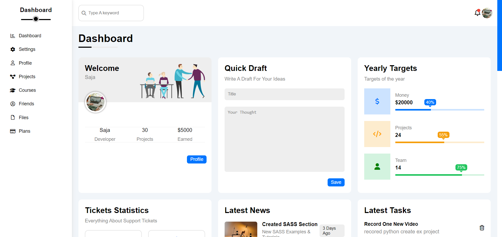

As a front-end developer, I specialize in creating responsive landing pages, dynamic web applications, or intricate e-commerce platforms using HTML, CSS, JavaScript, and ReactJS . My goal is to turn complex design concepts into high-functioning code that ensures a smooth, engaging experience for users.
Game-project by using ReactJs , The project achieves UI pixel Perfect, integration with APIs, dark and light themes, Clean code ,scalable code, reusable components, reusable hooks (useThemeContext , useAuth , useAuthContext, etc...), useReducer with the big state ,loading, error handling and confirmation dialogues. by using Technologies axios ,React router ,yup validation and React Hook Form.
When you write the GitHub UserName in theInput field then click on Get Repos button, all the Repos are shown and each one contains a visit button.When you press it, it goes to the Repo link on GitHub. Skills and deliverables used HTML5 , JavaScript , CS and API.
The Quiz Application is designed to provide an interactive multiple-choice quiz experience. Through this application, users can answer a series of questions, check their responses, and receive immediate feedback based on their correct answers. Main Components Quiz Information that Displays the quiz category and the number of questions,Submit Answers Button Allows users to submit their answers and proceed to the next question ,Timer A countdown timer that shows the remaining time to answer. and Quiz Results Displays the final result after completing all the questions.
The Figma Clinic Website Conversion project involves turning a meticulously designed clinic website prototype created in Figma into a functional, responsive, and interactive website using HTML5, CSS , media Query and animation
The page is created using modern HTML and CSS techniques, incorporating a variety of dynamic visual effects to enhance user interaction and make the experience more lively and engaging. the Page Features Include Interactive Design: Responsive and adaptable to all devices and screens and Advanced Visual Effects: Use of CSS effects to enhance scrolling and interaction, making browsing the page more attractive and exciting. 
This project showcases a custom Dashboard designed using HTML and CSS. It provides an advanced user experience. The Key Features Interactive User Interface user-friendly design that organizes data in a structured manner , Multiple Controls: The dashboard includes navigation buttons, dropdown menus, and search tools. and Responsive Design: The dashboard is designed to be responsive across various screen sizes. The project consists of 8 pages by using HTML, CSS, Media Queries.
